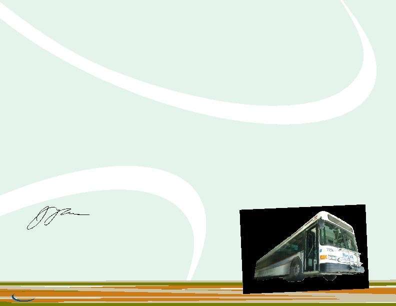

|

bus holiday toy drive, canned food drive, and outreach programs to local civic groups, schools and clubs. transit on a daily basis. they are our eyes and ears, letting us know how to improve the passenger's ride. selling fare media, providing maps, schedules and information on how best to utilize the nts family of services. each day comes with new challenges, but we look forward to solving them and affording this community the best transit service possible. the norwalk transit family for their devotion to providing efficient and economic public transportation services, in keeping with our commitment to quality, safety and effectiveness. |